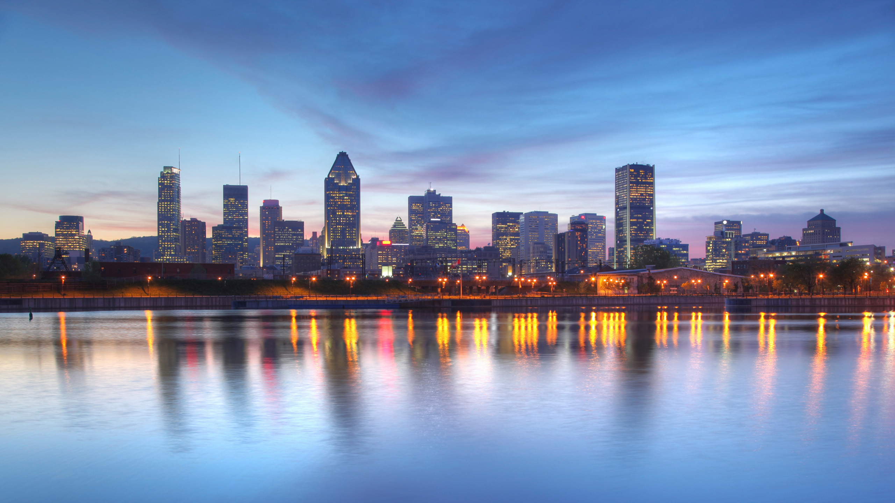
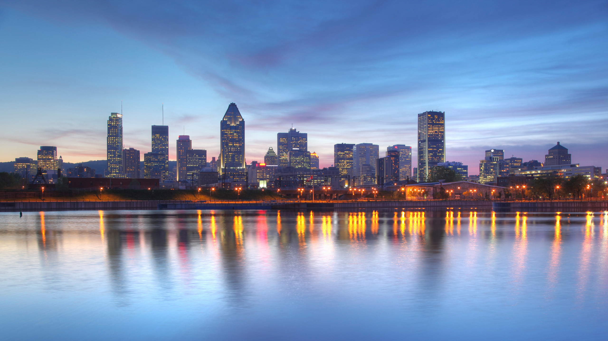
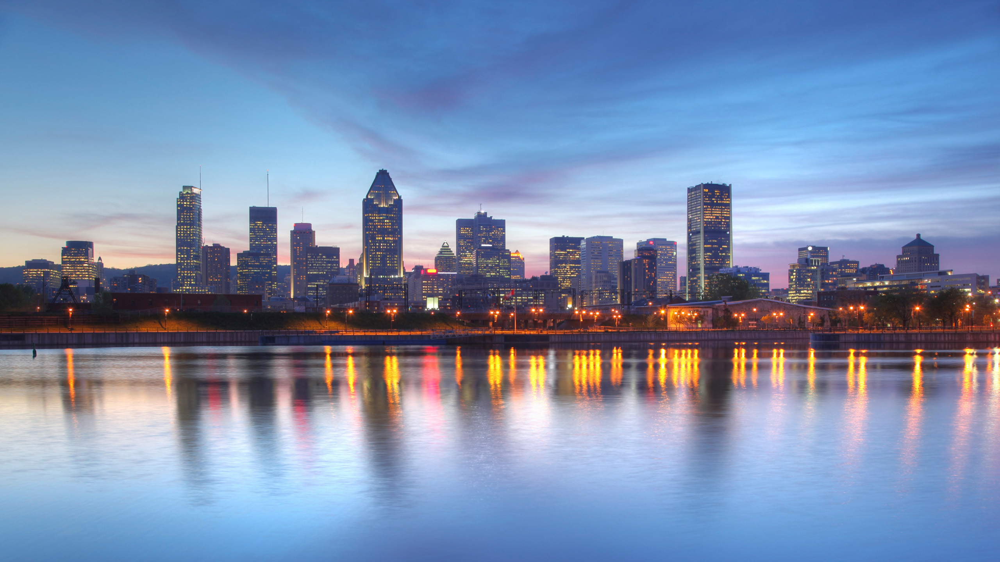
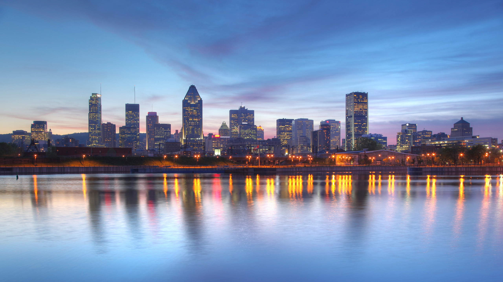

 

Montréal est la principale ville du Québec. Grande métropole4 insulaire et portuaire du fleuve Saint-Laurent au pied des rapides de Lachine, c'est la deuxième ville la plus peuplée du Canada, après Toronto, et la plus grande ville francophone d'Amérique5. Son aire urbaine, la région métropolitaine de Montréal, rassemble plus de 4,1 millions d'habitants, soit environ la moitié de la population du Québec. Montréal est l'une des grandes agglomérations d'Amérique du Nord et un important pôle financier, de savoir, de culture et d'aéronautique. C'est à Montréal que siègent l’Organisation de l’aviation civile internationale, l’Institut de statistique de l’UNESCO, le Secrétariat de la Convention sur la diversité biologique, ainsi que l’Agence mondiale antidopage. La ville doit son nom au mont Royal qui surplombe le centre des affaires et le centre historique de la ville, tous deux situés dans l'arrondissement Ville-Marie. Montréal est découpé en 19 arrondissements qui couvrent les trois-quarts de l’île de Montréal, la plus grande de l'archipel d'Hochelaga, mais également l’île Bizard, l'île des Soeurs et les îles Sainte-Hélène et Notre-Dame. Il y a plus de 1,8 millions d'habitants dans les limites municipales. Langue officielle de l'administration, le français est la langue d'usage de la majorité de la population. L'anglais et d'autres langues y occupent une place importante; la moitié des montréalais sont bilingues et près du quart sont trilingues. Cœur économique, commercial et financier du Québec, la ville compte plus de 400 sièges sociaux et de nombreuses grappes industrielles. Considérée comme « meilleure ville étudiante » au monde et comme la « métropole universitaire du Canada » avec six universités et 450 centres de recherche, Montréal est aussi un centre culturel d'importance pour les jeux vidéo, le cinéma et le design. Le transport collectif de la ville, structuré par un réseau de métro, est l'un des plus efficaces, rapides et ponctuels en Amérique du Nord. L'Aéroport international Pierre-Elliott-Trudeau accueille près de 20 millions de voyageurs annuellement. La région de Montréal est la porte d'entrée de l'immigration au Québec, 70% des personnes nées à l’étranger y demeurent. Hôte de l'Exposition universelle de 1967 et les Jeux olympiques d'été de 1976, Montréal accueille chaque année le Grand Prix de Formule 1 du Canada, et de nombreux festivals, tels le Festival international de jazz de Montréal, les FrancoFolies et le festival Juste pour rire. Le Canadiens de Montréal est le plus vieux club de hockey au monde toujours en activité, sans interruption.